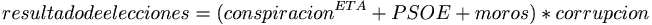
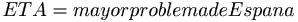
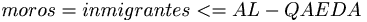
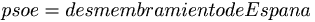

Frikcionario:Palabras que empiezan por T
 De: La Frikipedia, la enciclopedia extremadamente seria.
De: La Frikipedia, la enciclopedia extremadamente seria.
- taco: 1. Comida básica en la dieta de un mexicano. 2. "Taco taco men, i want to be a taco men" - Homero Simpson usando la palabra taco por millonesima ves.
- talué: Forma abreviada de decir "hasta luego" Talué tio. Ta-lué. Nos vemos, talué.
- tan: Expresión de cantidad Tan-to monta, monta tan-to Isabel como Frenando: Mucho to monta monta mucho to Isabel como Alonso. Mi polla es tan grande como un pino: eso no te lo crees ni tú.
- tándem: Adjetivo calificativo de la persona que hace el tonto en pareja con una bicicleta biasientada. Va montado en un tándem: Va montado sobre un tipo que anda en bicicletas raras.
- tenis: Forma arcaica de nombrar a la paja. Jugar al tenis: hacerse una paja.
- tartamudo: Comer tarta sin decir nada.
- terremoto: Expresión para designar el aburrimiento. Se suele medir por la escala de Richard. Terremoto de grado 3: aburrimiento menor. Terremoto de grado 12: aburrimiento algo más grande.
- teta: Objeto imaginario, que se dice que tienen las mujeres, pero que la mayoria de los frikis afirman no haber visto uno en persona en su vida. "Pasárselo teta": hablar soble mitología.
- teléfono: Palabra etimológicamente creada de la acreción de tele (que significa visión) y fono (que significa foco), es decir, se trata de un objeto de tortura que aplica la luz de un foco para quitarte la visión.
- telepatía: Televisión para la hermana de mi mamá.
- telón: Televisión de 50 pulgadas o más.
- tentaculo: Pasajero del sistema de transporte colectivo.
- teorema Popular: Teorema por el cual Acebes redefinió las leyes de la ultraderecha fascista. Su base es el terrorismo internacional.

Donde
,  y 
Para que resultado de las elecciones sea positivo desde el punto de vista de la derecha, conspiración tiene que ser cero. Los valores de la derecha de la ecuación son variables según datos del Partido Popular.
- tetano: Expresión de un bebe cuando ya no quiere leche.
- te quiero: Cuando alguien quiere té.
- tigrillo: Ti invento chismes in il trabajo pa’qui ti corran.
- tito MC: Dícese de aquel que te focka, te parte la boca y te planta cara por motivos desconocidos. Yeah! rapeas mejor que el Tito MC Diciendo que puede presentar al juan y medio.
- TLPTenerife: Evento tecnológico-satánico destinado a la adoración de TeLePito, Hugo el jefe de la noche y Alan, que aun sigue perdido.
- tripleta: Persona que es tres veces hijo de trabajadora sexual.
- todoterreno: Cabra, chivo, animal que anda en todos los terrenos. Montar en todoterreno: subirse a una cabra.
- tolón tolón: Sonido que emiten las campanas grandes, entre otros. Por ejemplo, las de nochevieja serían "Dong, dong". Las pequeñitas ya son otro mundo, que del "tilintilintilintilintilintilintilin" repetidopor44573487 veces y tocado alegremente no pasan.
- tornillo: Objeto imaginario que sirve para designar el grado de esquizofrenia de una persona. Le falta un tornillo: está un poco tonto. Pásame el tornillo: estoy tonto y digo cosas raras.
- totopo: Mamífero ciego de pepelo negro.
- tope: Animal terrestre que se gana el sueldo poniéndose al lado de las paredes para que corte el paso a la puerta. Toparse con alguien: llevar al susodicho animalito para que se de una hostia con alguien.
- troll: 1. Persona que trae vida a un foro aburrido y soso con mensajes que buscan crear pánico y desconcierto entre los aburguesados integrantes de dicha web. 2. Idiota rompe huevos que molesta diciendo que el artículo de Dakota Fanning es ofensivo. 3. Usuario de Wikipedia.
- trono: Lugar donde se acude al evacuar
la mierda los desechos del culo hombre.
- truño: 1. m**@%a en grandes cantidades, normalmente de vaca o reno. 2. Manjar coprofago muy apto para el organismo, da igual el tipo de m**@%a que sea mientras sea grande y hermoso.
- tú: Chivo expiatorio, del verbo chivarse, se emplea para atacar al pobre animalito que está hablando con el emisor del mensaje. Ejemplo: "Tú eres tonto", como ejemplo para desviar la atención de que yo soy tonto, pero si yo soy yo y tú eres tú, ¿quién es más tonto de los dos?
- tuberculo: Expresión que usaban los apaches cuando veían a alguien desnudo.
- tullido: Persona que goza de una buena salud "Soy un tullido" :estoy hecho un chaval. "Soy un chaval": estoy tullido, y así sucesoriamente.
- tunica: Bacinica de tu propiedad.
- twinky: Ser vivo con sangre de relleno cremoso reconocido por ser indestructible.
Autor(es):
- Frikiman
- Guilfer
- Khazike Khashondo
- El Sevillano
- Animally
- Kalimotxa
- ArreKarallo
- Richie Dio
- Dark temptation
- DarthSanti
Frikipedia 2005-2016, Licencia
GFDL 1.2 - Extraído por FrikiLeaks